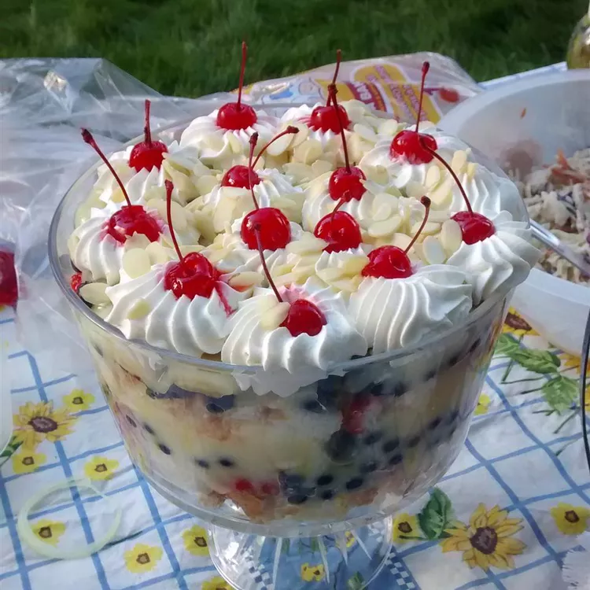

English Trifle

Description
This dessert recipe came from a friend from England, Gill Overfelt. She is
one of the best people in the world (an angel in disguise!). It is
delicious and elegant looking layered in a trifle bowl or individual
dessert glasses.
Ingredients
- 2 (8 or 9 inch) white cake layers, baked and cooled
- 2 pints fresh strawberries
- ¼ cup white sugar
- 1 pint fresh blueberries
- 2 bananas
- ¼ cup orange juice
- 1 (3.5 ounce) package instant vanilla pudding mix
- 2 cups milk
- 1 cup heavy whipping cream
- ¼ cup blanched slivered almonds
- 12 maraschino cherries
Steps
-
Slice strawberries and sprinkle them with sugar. Cut the bananas into
slices and toss with orange juice. Combine pudding mix with milk and mix
until smooth. Cut the cake into 1 inch cubes.
-
Use half of the cake cubes to line the bottom of a large glass bowl.
Layer half of the strawberries followed by half of the blueberries, and
then half of the bananas. Spread half of the pudding over the fruit.
Repeat layers in the same order.
-
In a medium bowl, whip the cream to stiff peaks and spread over top of
trifle. Garnish with maraschino cherries and slivered almonds.
Back